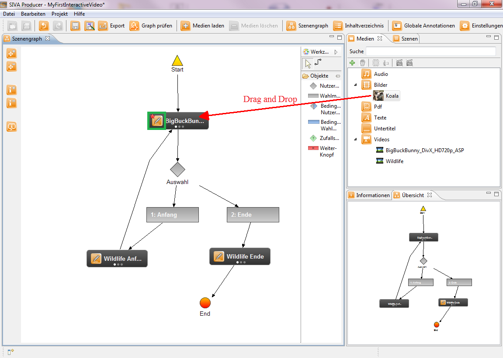

Adding scene annotations
The scene graph of your first interactive video with SIVA is now ready so far. Then you can add annotations to the scenes.
The following types of media can be chosen:
- video
- audio
- picture
- text
- rich text
For this purpose you have loaded a picture to the media repository. This picture will be added as an annotation to a scene.
In addition move the picture via drag an drop in that scene, to which it should be added. A small red star appears in the scene symbol. It shows, that an annotation was added to this scene. In the picture below this has been identified by means of a green frame.

To edit an annotation click on the button with the pen and the annotation editor opens.
An annotation always consists of a content, a length and a name. According to the type of the annotation the content can be changed. The annotation can be named by the user. If no name is set, the annotation is named by SIVA. For every annotation a start and end point have to be set.
This can be done in different ways:
- enter the start and end point into the input fields
- shifting the start and end point on the timeline
- setting by clicking the timeline: the cursor is positioned on a required point on the timeline and the left mouse button is clicked. The defining the end point is performed in the same manner, but the right mouse button have to be clicked.
If all settings are performed, the annotation is saved by clicking the save-button. Then the annotation is shown in the timeline section in the window above.
Now the scene graph is ready. In the next section the saving and exporting of the interactive video is shown.
For this click on the next menu item `saving and exporting of the interactive video` in the help index on the left side or click on the link below.
saving and exporting of the interactive video